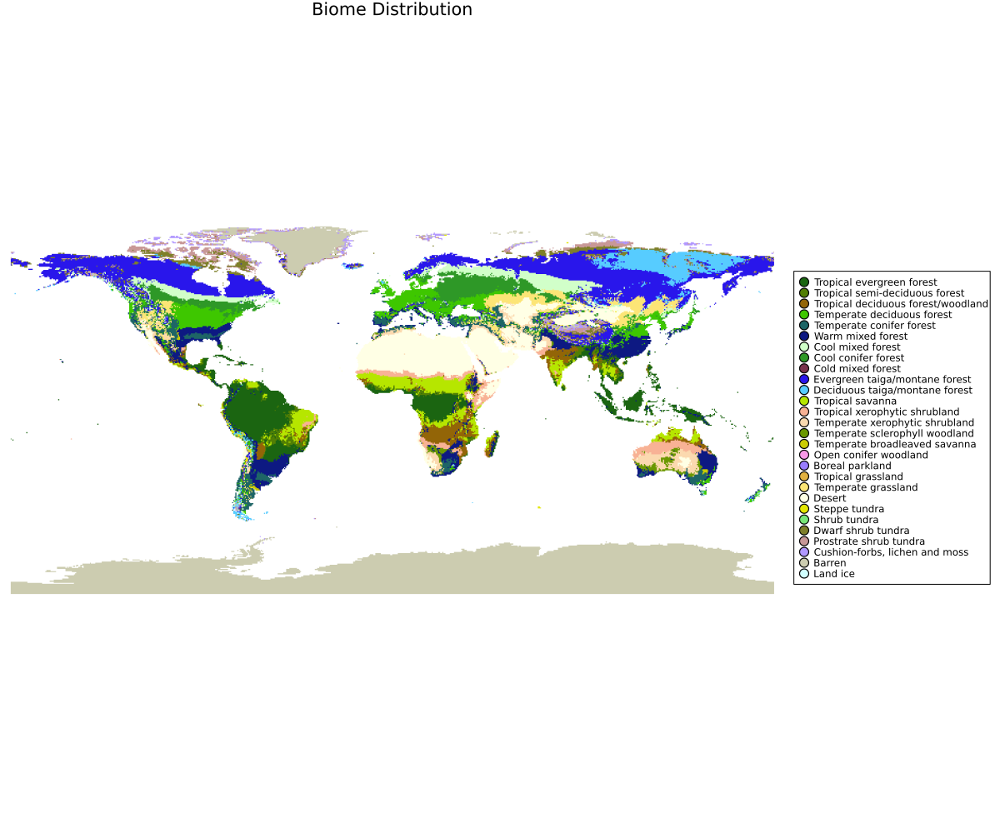

BIOME4

Figure. Example BIOME4-famil| Step | Original BIOME4 | Dominance-mode (Biome.jl) | |–-|–-|–-| | 3. Competition | Rule-based comparisons of woody vs. grass PFTs using thresholds on LAI, NPP, fire/greendays, and hand-crafted switches (e.g., temperate evergreen vs. cool conifer; woody-desert fallback; tundra shrub vs. cold herb). | Continuous scored ranking: climate-space dominance (Gaussian proximity to each PFT's optima for clt/temp/prec) × NPP × (1 / dominance_factor). Highest score wins; subdominants retained for mixed states. |utput. The NetCDF typically contains biome (class id), optpft (dominant PFT id), and npp (per-PFT) on the model grid.
We offer two ways to run the BIOME4 logic:
1) Original BIOME4
This path follows an exact translation of the original BIOME core (Haxeltine & Prentice; Kaplan & Prentice). The original Fortran sources by Jed O. Kaplan are available at: https://github.com/jedokaplan/BIOME4
Inputs (climatologies; aligned grids)
- Temperature (
temp): °C, monthly means (stacked in the 3rd dimension) - Precipitation (
prec): mm month⁻¹, monthly sums/means (consistent with your decision tree) - Sun/Cloud (
sunorclt): % (sunshine or cloudiness surrogate) - Soils (
Ksat,whc): saturated conductivity (mm h⁻¹) and water-holding capacity (mm cm⁻¹) - CO₂: a single ppm value representative of the climatology period
- PFT list: default BIOME4 PFTs, or a customized list
Outputs
biome (lon,lat): BIOME4 biome id (Kaplan & Prentice mapping)optpft (lon,lat): id of dominant PFTnpp (lon,lat,pft): annual NPP per PFT (same order aspftlist)
Notes
- Ensure all rasters share the same grid/extent and monthly stacking.
- Units: temp = °C; prec = mm month⁻¹; sun/clt = %; Ksat = mm h⁻¹; WHC = mm cm⁻¹.
- CO₂ should match the climatology-period mean.
2) Dominance-mode (modified competition)
This mode keeps the BIOME4 physiology (environmental sieve → LAI & NPP per PFT) but modifies the competition step to rank PFTs by climate-space dominance plus productivity.
Rationale (dominance envelope)
For each PFT and each climate variable (cloudiness, precipitation, temperature), we define an optimum and spread (fitted as a Gaussian in the PFT's observed/climatological niche). For a pixel value $x_v$ and variable $v ∈ {clt, temp, prec}$, we compute a standardized dominance contribution:
\[\mathrm{dom}_v = \exp\!\left(-\frac{(x_v - \mu_{\mathrm{PFT},v})^2}{2\,\sigma_{\mathrm{PFT},v}^2}\right)\]
Then sum (or weight/sum) across variables:
\[\text{dominance\_environment} = \mathrm{dom}_{\text{clt}} + \mathrm{dom}_{\text{temp}} + \mathrm{dom}_{\text{prec}}\]
Finally, combine climate dominance with productivity and a PFT-specific $\text{dominance\_factor}$:
\[\mathrm{score}_{\mathrm{PFT}} = \text{dominance\_environment}\times \mathrm{NPP}_{\mathrm{PFT}} \times \frac{1}{\text{dominance\_factor}_{\mathrm{PFT}}}\]
The PFT with the highest score is the dominant (optpft). Woody and grass subdominants are tracked for mixed cases.
Outputs
Same schema as the original mode (biome, optpft, npp). The biome is still assigned using the BIOME4 PFT→biome mapping after dominance is chosen.
What’s different in competition?
At a high level, both modes:
- Sieve PFTs by physiological constraints (e.g.,
tmin,gdd5/gdd0,tcm,twm, snow, soil water balance). - Compute LAI and NPP for all surviving PFTs.
They diverge at step (3):
| Step | Original BIOME4 | Dominance-mode (Biome.jl) |
|---|---|---|
| 3. Competition | Rule-based comparisons of woody vs. grass PFTs using thresholds on LAI, NPP, fire/greendays, and hand-crafted switches (e.g., temperate evergreen vs. cool conifer; woody-desert fallback; tundra shrub vs. cold herb). | Continuous scored ranking: climate-space dominance (Gaussian proximity to each PFT’s optima for clt/temp/prec) × NPP × (1 / dominance_factor). Highest score wins; subdominants retained for mixed states. |
This preserves BIOME4’s physiology and the environmental sieve, while replacing the final “if/else” winner logic with a continuous dominance score—making it easier to extend to custom PFT sets without rewriting many rule branches.
Inputs — recap (mechanistic modes)
- Required rasters:
temp,prec(monthly stacks); typically alsoclt/sun,Ksat,whc. - CO₂: single ppm value representative of your climatology period.
- PFT list: defaults to
BIOME4.PFTClassification(); parameters/constraints can be customized.
Grid alignment is critical: all rasters must share the same X/Y grid and time stacking. Missing values are normalized internally to -9999.0.
Output variables (NetCDF)
- Coordinates:
lon,lat - Mechanistic schema
biome :: Int16— BIOME4 biome idoptpft :: Int16— dominant PFT idnpp :: Float64— shape(lon, lat, pft); includesnum_pfts + 1slots (default/mixed)
Keep a sidecar legend for PFT id → name and biome id → label used in your plots.
Minimal troubleshooting
- Flat/missing output: check raster alignment/units; inspect the min/max debug prints in the driver.
- Everything “NA”: verify units and that monthly stacks are on the 3rd dimension.
- Resume quirks: the driver skips rows where the primary variable (
biome) already holds non-fill values; remove/rename the outfile to force a clean run.
References
- Haxeltine, A., & Prentice, I. C. (1996). BIOME3: An equilibrium terrestrial biosphere model based on ecophysiological constraints, resource availability, and competition among plant functional types. Global Biogeochemical Cycles, 10(4), 693–709.
- Kaplan, J., & Prentice, I. (2001). Geophysical Applications of Vegetation Modeling.
- Prentice, I. C., Cramer, W., Harrison, S. P., Leemans, R., Monserud, R. A., & Solomon, A. M. (1992). A Global Biome Model Based on Plant Physiology and Dominance, Soil Properties and Climate. Journal of Biogeography, 19(2), 117–134.
- BIOME4 Fortran sources: https://github.com/jedokaplan/BIOME4